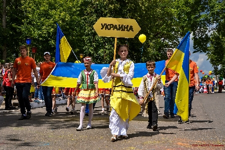

XVII Международный фестиваль детского творчества «Золотая пчёлка».Международный фестиваль детского творчества «Золотая пчёлка» всегда оставляет после себя незабываемые впечатления. И в этот раз праздник детства, таланта, дружбы позволил всем участникам и гостям форума окунуться в мир прекрасного, проявить свои способности и испытать массу приятных, положительных эмоций. 
Семнадцатый по счету международный фестиваль детского творчества собрал под своим крылом более 600 юных дарований из Беларуси, России, Украины, Молдовы и Болгарии. Четыре праздничных дня пролетели, как один миг. А все дело в том, что программа «Золотой пчёлки» была насыщенной, разнообразной, и каждый мог найти в ней что-то для себя интересное и полезное. Уже в первый фестивальный день в городском парке работала театрализованная фольклорная выставочно-торговая экспозиция «Карагод беларускай гасціннасці», тематическая развлекательная площадка «Сонечны калейдаскоп», игровая площадка «Формула детской радости», была организована выставка детских рисунков и работ декоративно-прикладного искусства «Мой родны кут», прошла праздничная программа «Фестывальная краіна», шоу-программа «Фестывальнае сузур’е талентаў «Залатой пчолкі», диско-марафон и др. Скучать никому не пришлось. В последний майский день мы встретили творческие делегации стран-участниц. А уже 1 июня конкурсанты со своими вокальными и хореографическими номерами предстали перед компетентным жюри. Народные танцы и песни сменялись классическими, а те, в свою очередь — эстрадными. Сольные выступления, ансамбли — все это закрутило зрителей и членов жюри в калейдоскопе ярких номеров, костюмов, неожиданных открытий и сюрпризов. Председателем жюри в номинации «Вокальное искусство» в этом году, как и прежде, являлась заслуженный деятель культуры Республики Беларусь, художественный руководитель Национального центра музыкальных искусств имени Владимира Мулявина Светлана Стаценко. Во главе жюри, оценивавшего номера жанра «Хореографическое искусство», стоял генеральный секретарь Международного союза ассоциации фольклора, председатель ассоциации фольклорных групп Болгарии Росен Богданов. Во второй фестивальный день в городском парке и на площади 50 лет Великого Октября прошел ряд интересных мероприятий. Были организованы игровые площадки, интерактивная праздничная аллея «Радуга счастливого детства», а также «Вернісаж фестывалей Магілеўшчыны» — праздничная театрализованная экспозиция тематических презентационных площадок учреждений культуры и образования районов Могилевской области, фестивальные бренды Могилевщины в рамках Года малой родины в Беларуси — театрализованные выставочно-торговые экспозиции учреждений культуры централизованных клубных систем и детских школ искусств районов области, творческие презентации работ мастеров декоративно-прикладного искусства, работы выставочных экспозиций с мастер-классами и демонстрацией технологического процесса, тематическими и театрализованными программами — презентациями фестивалей — региональных брендов (игровыми программами и аттракционами, продажей тематической сувенирной продукции с символикой региональных фестивалей). В зале заседания райисполкома состоялся вечер знакомств организаторов и гостей фестиваля «Золотой праздник детства». А позже все поспешили на праздничное открытие 17 Международного фестиваля детского творчества «Золотая пчелка». Участников и гостей форума приветствовали заместитель председателя Могилевского областного исполнительного комитета Андрей Кунцевич, консультант управления культуры и народного творчества Министерства культуры Республики Беларусь Иван Голобурда, первый заместитель председателя Климовичского райисполкома Дмитрий Мартинович. Приветственное слово посольства Российской Федерации в Республике Беларусь участникам «Золотой пчелки» зачитал руководитель представительства Нижегородской области в Республике Беларусь Сергей Петров. На мероприятии присутствовали: депутат Палаты представителей Национального собрания Республики Беларусь Татьяна Марочкова, начальник главного управления идеологической работы и по делам молодежи Могилевского облисполкома Екатерина Музыченко, почетные земляки — начальник инспекции по налогам и сборам по Могилевской области Иван Кожемяко, заслуженный эколог Российской Федерации Николай Крупинин, а также генерал-майор в отставке Василий Чемисов и генерал-майор в отставке Виктор Павлов. 
Юные маленькие «звёздочки» до самого позднего вечера дарили зрителям свои яркие и неординарные выступления. Завершился второй фестивальный день файер-шоу и праздничным фейерверком. В субботу с самого утра на площади 50 лет Великого Октября и в городском парке работала тематическая площадка «Безопасное детство». Сначала сотрудники Климовичского РОЧС провели показательное выступление «Пожарный кроссфит». Позже предложили всем желающим примерить боевку, войти в изолирующем противогазе в задымленную палатку и отыскать там спрятанный предмет, сбить водой мишень с помощью огнетушителя, а также попробовать свои силы в скалолазании. Помимо этого спасатели организовывали для детворы игры и викторины на знание правил пожарной безопасности. Желающих получить свою долю адреналина, проверить смекалку было хоть отбавляй. Немалое количество зрителей собрала конкурсная программа «Мисс «Золотая пчёлка». В нынешнем году этого почетного титула была удостоена Екатерина Подобед (первая городская школа). Титул «Мисс Очарование» был присвоен Ольге Белькиной (начальная школа), «Мисс Артистичность» — Ангелине Максименко (четвертая городская школа), «Мисс Фантазия» — Валерии Кашанской (Тимоновская средняя школа), «Мисс Элегантность» — Елизавете Боровиковой (третья городская школа). Нужно отметить, что конкурсантки к данному мероприятию подготовились наилучшим образом, их выступления были яркими и запоминающимися. Всем участницам от общественного объединения «Белорусский фонд мира» были вручены подарки. Традиционно в ходе фестиваля прошел конкурс детского рисунка на асфальте. В нынешнем году ребятам была предложена новая тема — «Мой родны кут». В этом конкурсе диплома первой степени были удостоены климовчанки Валерия Москалева, Кира Марченко и Дарья Маслова, диплома второй степени — климовчанки Мария Сапранкова, Диана Гращенко и кричевлянка Александра Филипова, диплома третьей степени — наши землячки Анастасия Шурухайлов, Дарья Горулева и кричевлянка Николь Таратынко. В третий фестивальный день была организована выставка-продажа изделий декоративно-прикладного и изобразительного искусства, прошли мастер-классы с демонстрацией технологического процесса изготовления изделий мастеров декоративно-прикладного и изобразительного искусства Могилёвщины «Фестивальные узоры», работали тематические презентационные площадки стран-участниц фестиваля. Детей и взрослых порадовал фестиваль красок Холи, праздничный концерт «АРТ мосты дружбы», творческая программа «Белстрайк». Завершением субботних праздничных мероприятий стала концертная программа «Подарок фестивалю» (фестивальный флэш-моб — команда «Next»). В воскресенье, 3 июня, после церемонии вручения дипломов участникам форума юные вокалисты и танцоры из 5 государств под аплодисменты зрителей прошли праздничной колонной по центральной улице города. Через некоторое время в амфитеатре состоялся гала-концерт «Радуга талантов фестиваля «Золотая пчелка», во время которого были вручены дипломы лауреатам фестиваля — самым ярким и одаренным юным «звёздочкам». Дипломами третей степени отмечено 14 конкурсантов, второй степени — 13. Дипломами первой степени были награждены: Валерия Лях (Минск, Республика Беларусь), Арина Пехтерева (Могилев, Республика Беларусь), Акулина Андреева (Минск, Республика Беларусь), Эльвира Либузер (Могилёв, Республика Беларусь), Ангелина Гваджая (Могилёв, Республика Беларусь), Елена Титова (Могилёв, Республика Беларусь), образцовый вокальный коллектив «Песенка» (Минск, Республика Беларусь), вокальная группа Залуженного коллектива Республики Беларусь «Театр эстрадной песни «Сябрынка» (Минск, Республика Беларусь), народный вокальный ансамбль «Шарени гайтани» ( Бургас, Болгария), вокальная группа «Рабіначка»(Могилёв, Республика Беларусь), Елизавета Хорова ( Бобруйск, Республика Беларусь), студия современной хореографии «Вдохновение» (Минск, Республика Беларусь), танцевальная группа «Тинейджеры» (Могилёв, Республика Беларусь), детский фольклорный танцевальный ансамбль «Радость» (Бургас, Болгария). Наивысшей награды фестиваля — Гран-при — в этом году были удостоены: Лилиана Садовская — солистка продюсерского центра «Мьюзик М» (г. Могилёв, Республика Беларусь); вокальное трио«DiVoice» продюсерского центра «Мьюзик М» (г. Могилёв, Республика Беларусь); заслуженный коллектив народного творчества ансамбль современного танца «Ракета» Муниципального бюджетного учреждения дополнительного образования «Детская школа искусств «Созвездие» (г. Нижний Новгород, Российская Федерация). Специальным призом Климовичского районного исполнительного комитета награждены учащаяся ГУО «Климовичская детская школа искусств» Анастасия Поборцева (Беларусь) и учащаяся Градижской детской музыкальной школы им. А. Билаша Анна Голованова (Украина). Специального приза Белорусского унитарного страхового предприятия «Белгосстрах» были удостоены: Анна Ныркова — солистка Заслуженного любительского коллектива Республики Беларусь образцового театра-студии «Радуга» ГУДО «Областной центр творчества» г. Могилёв, детский ансамбль «Забава» РЦК ГУО «ЦКС Бобруйского района» Специальный приз Климовичской районной организации республиканского общественного объединения «Белая Русь» был вручен Валерии Клюшниковой — учащейся ГУО «Климовичская детская школа искусств». В ходе всех четырёх фестивальных дней с утра до позднего вечера в городском парке и на площади 50 лет Великого Октября звучала музыка, проходили интересные и увлекательные мероприятия. Конечно же, в это время работали многочисленные аттракционы и торговые павильоны. Партнёрам фестиваля выступили: ООО «Мобильные ТелеСистемы», компания «Евроопт», БРУСП «Белгосстрах», Климовичская районная организация общественного объединения «Белорусский фонд мира», Климовичская районная организация республиканского общественного объединения «Белая Русь», госпожа Бригитте Гизберт и союз женщин города Бинген на Рейне (Германия). Такой была «Золотая пчёлка — 2018» : яркой, громкой и наполненной талантами. Победители получили заслуженные награды, зрители — эмоции, участники — новых друзей, а преподаватели и члены жюри — вдохновение. До новых встреч!
По материалам газеты «Родная нива»
|